Visualizing density - I
Lecture 5
Announcements
- Working with project teams in lab tomorrow!
Distributions
There are many properties of a distribution of values
- Center: Mean, Median, Modes
- Spread: Variance, Range (Support), Interquartile range
- Shape: Skewness, Kurtosis, Quantiles
- Any statistic you can think of
Ultimately when analyzing data, the distribution is important to know how to proceed:
- Parametric tests
- Erratic Data
- Outliers
So let’s visualize them!
Histograms
Histogram of 200 random numbers generated from a \(\textsf{Normal}(\mu=-1, \sigma=0.5)\) and 400 generated from a \(\textsf{Normal}(\mu=2, \sigma=0.75)\):
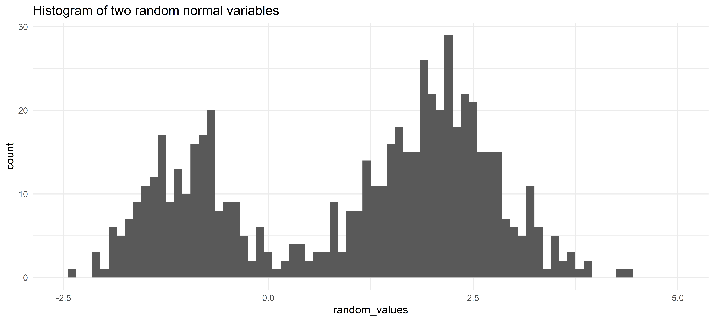
Density Plots
What’s the difference? Histograms are counts of bins of observed data. Density plots are estimates of the unknown distribution.
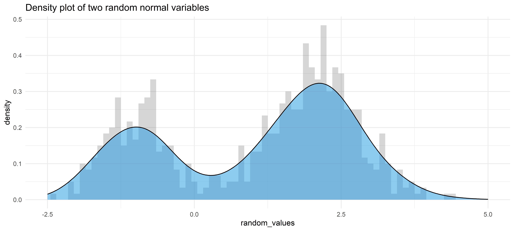
So what?
Histograms are sensitive to where the bins are cut
Histograms vary more per random sample than density plots
Density graphs are estimates for what a very fine histogram with lots of data would show
Motivating Example
- Baseball! A home run in baseball occurs when a player hits a fair ball outside of the playing field. Examples:
Home runs are exciting! Baseball currently has a marketing problem, but throughout history Major League Baseball (MLB, the organization running the highest level of professional baseball) has tried to change the rules to increase home runs to help the game be more entertaining.
- In short terms, Home runs = Money, but if everyone hits the same number of home runs they become less exciting.
- Examining the distribution of home runs year-by-year we may be able to see the effect of rule changes.
Data
library(Lahman)
names(Batting) [1] "playerID" "yearID" "stint" "teamID" "lgID" "G"
[7] "AB" "R" "H" "X2B" "X3B" "HR"
[13] "RBI" "SB" "CS" "BB" "SO" "IBB"
[19] "HBP" "SH" "SF" "GIDP" Our dataset comes from the R package Lahman. Each row in the data frame is the hitting stats of a player for a given year. We will mostly be using the following columns:
| Variable | Description |
|---|---|
yearID |
The year for the statistics |
playerID |
Player unique ID to distinguish rows |
HR |
The number of home runs a player hit in a given year |
SB |
Stolen bases; more stolen bases = faster player |
G |
Number of games played; there are 162 games in a baseball season (154 before 1961) |
BB |
Walks; more walks = defense is worried about player hitting home runs |
SO |
Strike outs; more strikeouts = Hitter is swinging recklessly |
Data we will use
home_runs <- BattingWe are interested in the distribution of the number of home runs individual players have hit per year. 1
Context 1
There are many players in the dataset that played very little games per year, so we will limit to players that played at least 100 games in a given year, with the following years excepted:
- In 1994 only about 115 games were played due to labor strikes, so will filter to at least 70 games.
- In 2020 COVID shortened the season to only 60 games, so we will filter at least 40 games.
home_runs <- Batting |>
filter(
G >= 100 |
(G >= 40 & yearID == 2020) |
(G >= 70 & yearID == 1994)
)Context 2
- We are only concerned with years after 1920 (known as the “live-ball era”).
- Very few home runs were hit before 1920 as the same baseball was used for the entire game. About 100 baseballs are used every game today!
home_runs <- Batting |>
filter(
G >= 100 |
(G >= 40 & yearID == 2020) |
(G >= 70 & yearID == 1994),
yearID > 1920
)Context 3
We are only considering the AL and NL leagues as they have the best stat-tracking and are the only Major leagues still around today.
home_runs <- Batting |>
filter(
G >= 100 |
(G >= 40 & yearID == 2020) |
(G >= 70 & yearID == 1994),
yearID > 1920,
lgID %in% c("AL", "NL")
)Density Graph Example
ggplot(home_runs, aes(HR)) +
geom_density() +
xlab("Home runs per player per year")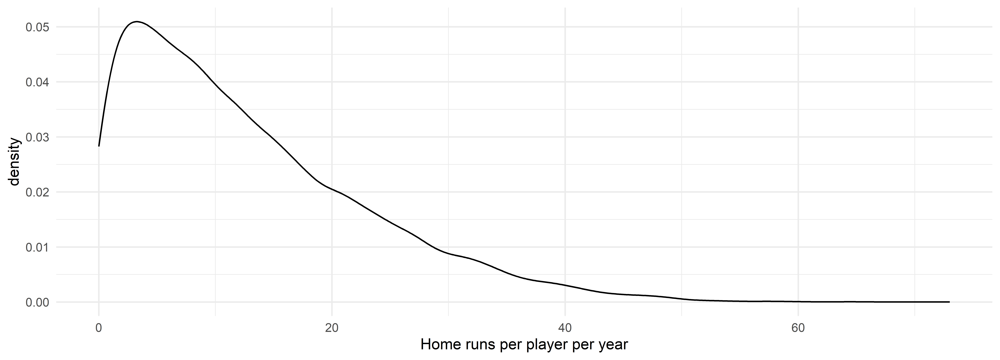
- Most players hit just a few home runs per year and the distribution is very right-skewed.
- Very few players hit more than 40 per year.
Stacked Density Graph By Decade
home_runs |>
mutate(
decade = cut(
yearID,
breaks = seq(1920, 2030, 10),
labels = paste0(seq(1920, 2020, 10), "'s")
)
) |>
ggplot(aes(HR, fill = decade)) +
geom_density(position = "stack") +
labs(x = "Home runs per player per year")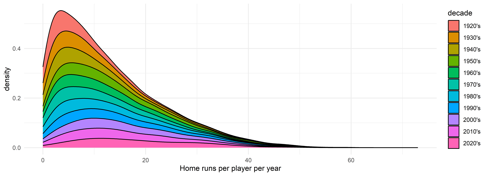
If we stratify by decade, we can see the mode of the density graphs slowly creep forward, but it is difficult to see the tail of the distribution.
Overlapping Density Graphs By Decade
home_runs |>
mutate(
decade = cut(
yearID,
breaks = seq(1920, 2030, 10),
labels = paste0(seq(1920, 2020, 10), "'s")
)
) |>
ggplot(aes(HR, color = decade)) +
geom_density() +
labs(x = "Home runs per player per year")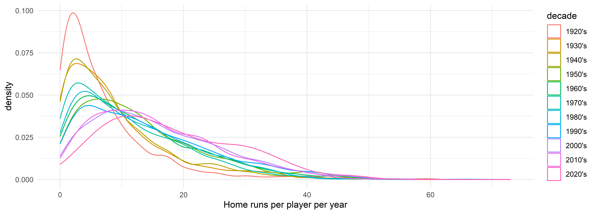
The modes moving forward is a little more apparent now, but the graphs are too coupled to digest easily.
Density Graph with Conditional Probabilities
home_runs |>
mutate(
decade = cut(
yearID,
breaks = seq(1920, 2030, 10),
labels = paste0(seq(1920, 2020, 10), "'s")
)
) |>
ggplot(aes(x = HR, y = after_stat(count), fill = decade)) +
geom_density(position = "fill") +
geom_vline(xintercept = 60, linetype = "dashed") +
labs(x = "Home runs per player per year")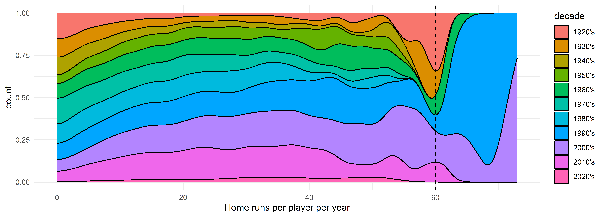
By using position = "fill" and y = after_stat(count) we graph the conditional probability of a decade given that a player has hit a certain number of home runs. We see that players would hit about 60 homeruns in the 20’s and 30’s, but that disappears until the 90’s and 2000’s. 2
Violin Plot
home_runs |>
filter(yearID %in% 1985:2005) |>
ggplot(aes(HR, x = factor(yearID))) +
geom_violin(draw_quantiles = c(0.25, 0.5, 0.75)) +
geom_jitter(
data = ~ filter(.x, HR >= 30),
height = 0, width = 0.1, alpha = 0.5
) +
scale_x_discrete(guide = guide_axis(n.dodge = 2)) +
labs(x = "Home runs per player per year")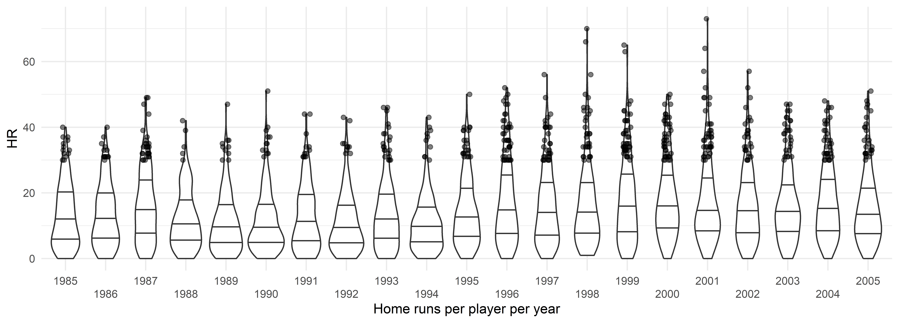
Let’s examine the years near the change point, 1985 to 2005. All points shown are players that hit 30 or more home runs in a given year. It looks like around 1995 players started hitting a lot more home runs.
Ridge Plot
library(ggridges)
home_runs |>
filter(yearID %in% 1985:2010) |>
ggplot(aes(x = HR, y = factor(yearID))) +
stat_density_ridges(
mapping = aes(fill = factor(after_stat(quantile))),
geom = "density_ridges_gradient",
calc_ecdf = TRUE,
quantiles = c(.25, .50, .75, .95),
quantile_lines = TRUE,
scale = 2,
rel_min_height = 0.01
) +
scale_fill_viridis_d(
name = "Quantiles",
labels = c("0", "25th", "50th", "75th", "95th")
) +
geom_jitter(
data = ~ filter(.x, HR >= 30),
height = 0.2, width = 0, alpha = 0.3,
) +
scale_x_continuous(
name = "Home runs per player per year",
limits = c(0, 73)
) +
labs(y = "Year")
The quantiles also have a consistent increase, along with many more players hitting 30 or more home runs! In 1998 there was a home run record race between two players; this brought a lot of interest back into baseball. 1995 to about 2005 is known as the Steroid Era in baseball. During this time, players would take performance enhancing drugs freely as the league did not enforce the ban on them. League-wide testing began in 2003.
Application Exercise: More Examples
- Go to
ae-05 - Work on Exercise 1
12:00
Bandwidth
Density graphs are sensitive to bandwidth, but this is a continuous degradation of performance.
Automatic Bandwidth Selection
Because change in bandwidth leads to a continuous change in the density estimate, it is often easier to automatically pick a bandwidth!
Silverman’s ‘rule-of-thumb’
bw.nrd0:\[ \begin{align*} h = 0.9 * n^{-1/5} \min(s, IQR/1.34) \end{align*} \]
- One of the most optimal bandwidth selectors if your data comes from a normal distribution
- Default in
ggplot2andR
Sheather-Jones
bw.SJMore complicated bandwidth selector that “would rather fit” as the default
Less likely to give over-smoothed density graphs
geom_density(bw = "SJ")to use
Other methods
Scott’s plug in estimator
bw.nrd: similar to Silverman’sbw.ucvandbw.bcv: cross validation based methods that are less useful for data visualizationbw.SJ(<data>, method = "dpi"): An easier to calculate Sheather-Jones estimate that gives worse results
Sheather-Jones Example
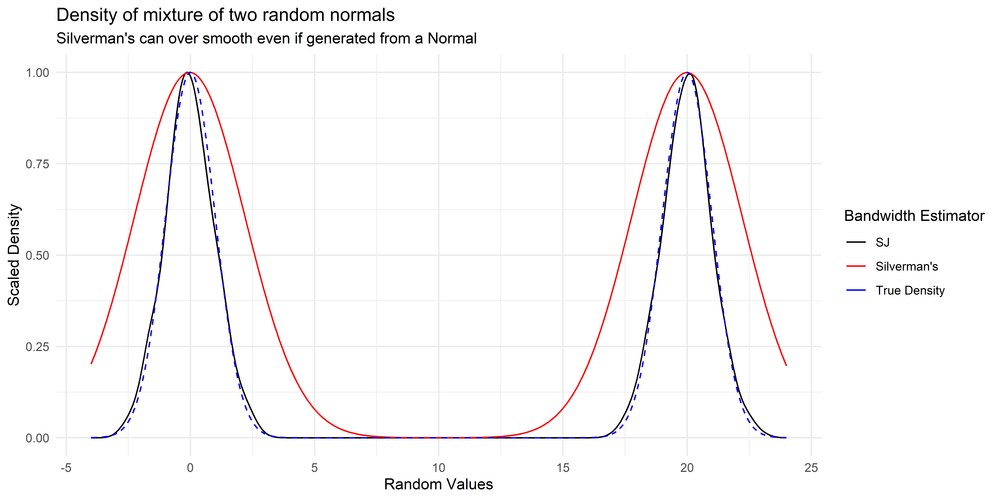
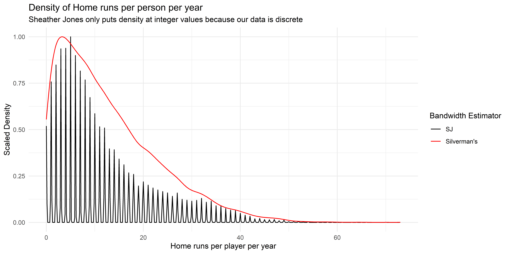
Kernel Density Estimates (Advanced)
- Density graphs are illustrations of Kernel Density Estimates:
\[ \begin{align*} \hat{f}_h(x) & = \frac{1}{nh} \sum_{i=1}^n K\left(\frac{x - x_i}{h}\right) \end{align*} \]
\(x_i\) is the \(i^{th}\) data point
\(h\) is the bandwidth of the Kernel
\(K\) is the Kernel
- \(K\) can be a number of functions (see
kerneloption from?densityor Wikipedia) but is usually the Gaussian kernel: \(K(x) = \frac{1}{\sqrt{2\pi}} \exp\left(-\frac{x^2}{2}\right)\). - Choice of \(K\) will give different looking density graphs, but choice of bandwidth is a lot more important than choice of Kernel. The Gaussian Kernel is by far the most used.
- To see examples of Kernel choices, see this shiny app by Eduardo García-Portugués.
- \(K\) can be a number of functions (see
Application Exercise: Bandwidth
- Go to
ae-05 - Work on Exercise 2
05:00
Cautions
long_tailed_data <- tibble(random_values = rlnorm(1000, -3, 1))plot(
density(long_tailed_data$random_values, bw = "SJ"),
main = "Density graph of positive numbers with density below 0"
)
abline(v = 0, col = "red", lty = 2)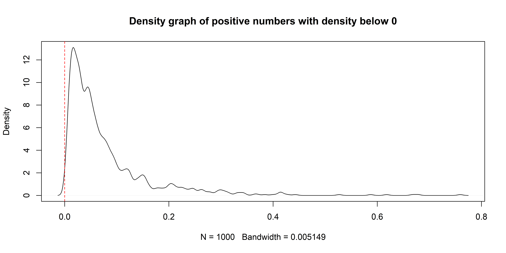
plot(
density(long_tailed_data$random_values, bw = "SJ", from = 0),
main = "Density graph of positive numbers with cut density"
)
abline(v = 0, col = "red", lty = 2)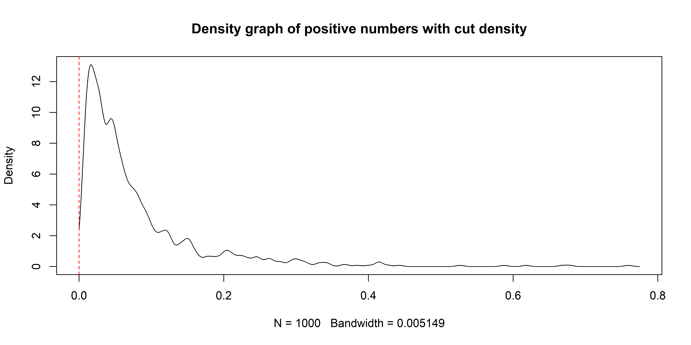
ggplot2 generally handles this for you by putting bounds at the range of your data, but it can occasionally skip this depending on how complicated your graph becomes.
longer_tailed_data <- tibble(random_values = rlnorm(1000, -6, 5))ggplot(longer_tailed_data, aes(x = random_values)) +
geom_density()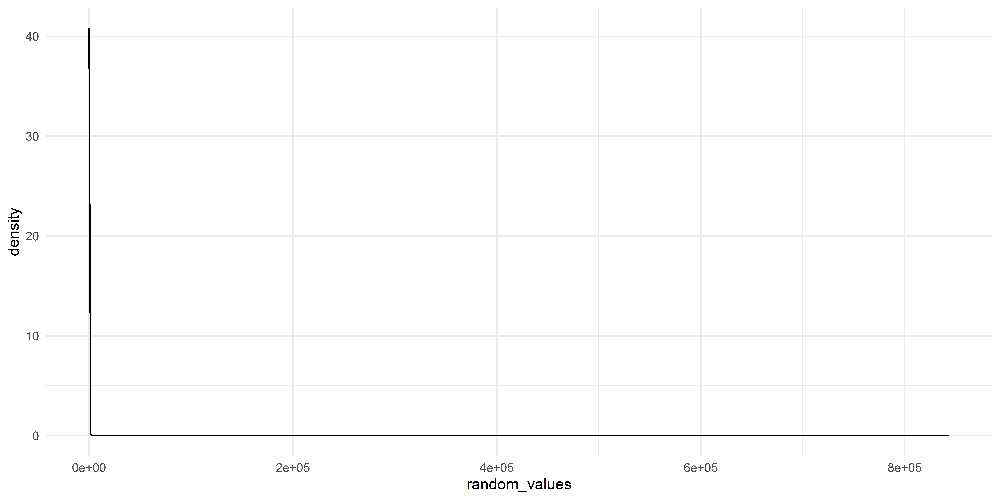
ggplot(longer_tailed_data, aes(x = random_values)) +
geom_density() +
scale_x_continuous(trans = "log")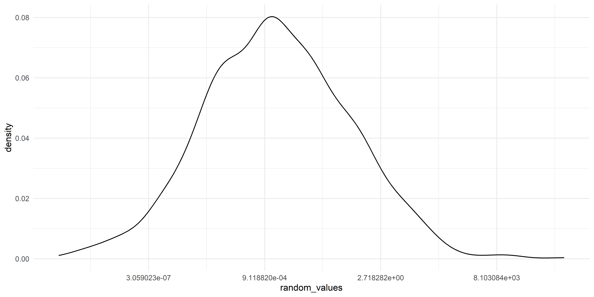
This occurs in practice quite often!
2D Density/Histograms
Players that hit lots of home runs tend to strikeout and walk more.
home_runs |>
ggplot(aes(x = HR, y = SO + BB)) +
geom_jitter(width = 0.3, height = 0.3, alpha = 0.1) +
geom_density_2d(alpha = 0.5) +
labs(
x = "Home runs per player per year",
y = "Strike outs and walks per player per year"
)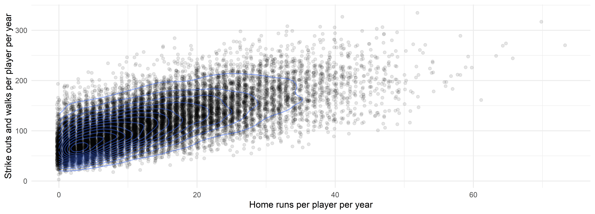
home_runs |>
ggplot(aes(x = HR, y = SO + BB)) +
geom_bin_2d(binwidth = c(2, 10)) +
geom_density_2d(alpha = 0.5) +
labs(
x = "Home runs per player per year",
y = "Strike outs and walks per player per year"
) +
scale_fill_viridis_c()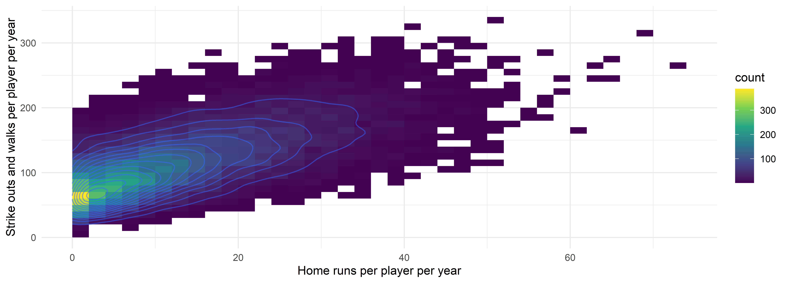
home_runs |>
ggplot(aes(x = HR, y = SO + BB)) +
geom_density_2d_filled(show.legend = FALSE) +
geom_density_2d() +
labs(
x = "Home runs per player per year",
y = "Strike outs and walks per player per year"
)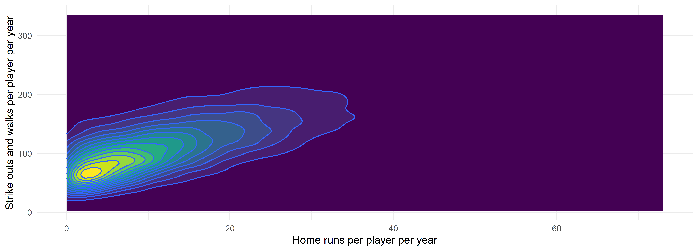
Density Graphs Summary
Pros:
- Visualize entire distribution
- Mean, median, variance, outliers, support, skewness, normality etc.
plot(density(Batting$HR))is usually the first thing I do when analyzing data
Cons:
- Sensitive to bandwidth choices
- Harder to communicate to non-statisticians
- Difficult to build yourself (use libraries!)